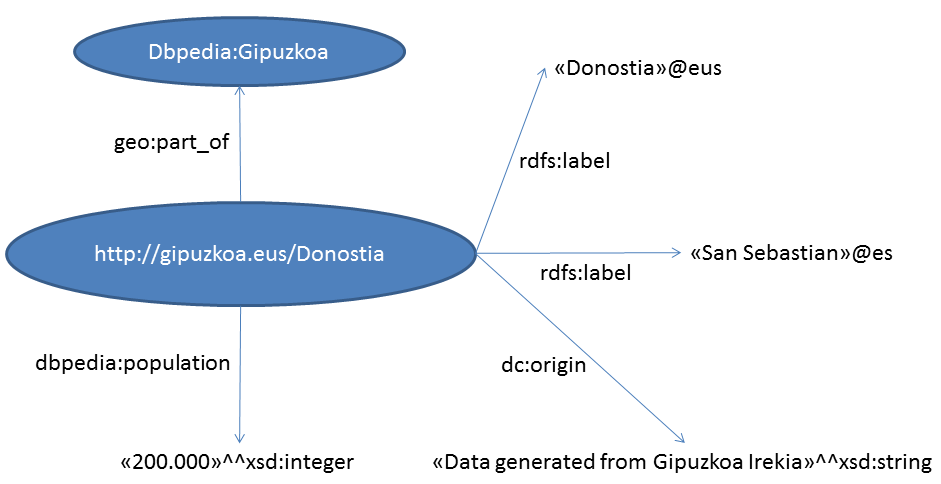

RDF
Mikel Egaña Aranguren
RDF triplea

RDF grafoa

RDF grafoa
Grafoaren entitate guztiak URIen bidez identifikatzen dira
URI: Uniform Resource Identifier (≠ URL!). Baliabideak identifikatzen ditu
- http://dbpedia.org/resource/Ataun
URL: Uniform Resource Locator. Sarean baliabide baten kokapen fisikoa adierazten duen URI bat
- http://gipuzkoa.eus/ataun.html
RDF grafoa
Subjektuak eta predikatuak baliabideak soilik izan daitezke (URIak)
Zenbait objektu balio literalak izan daitezke (Karaktere kateak)
Balio literalek datatype izan dezakete (XML Schema Datatypes)
RDF grafoa: datatypes

Hiztegi bereziak
Hizkuntza bera definitzen dute
RDF: http://www.w3.org/1999/02/22-rdf-syntax-ns# (Ej. rdf:type = http://www.w3.org/1999/02/22-rdf-syntax-ns#type)
RDFS: http://www.w3.org/2000/01/rdf-schema#
OWL: http://www.w3.org/2002/07/owl#
Domeinu hiztegiak (Ontologiak)
Domeinu zehatza deskribatzen dute
Argitaratu nahi ditugun datuentzako hizkuntza ematen digute
foaf:person, dbpedia-ont:city, dc:book, schema:person, ...
Ontologiak

RDF: eredua eta sintaxia
RDF datuak kodifikatzeko eredua da
Eredu abstraktu hori sintaxi desberdinen bidez irudika daiteke: Fitxategi batean "Serializatu" (idatzi)
Sintaxi horietako bat RDF/XML da
Ez nahastu eredua sintaxiarekin: RDF XML fitxategi bat baino askoz gehiago da!
RDF serializatu
RDF/XML (http://www.w3.org/TR/rdf-syntax-grammar/)
RDFa (http://www.w3.org/TR/rdfa-core/)
Turtle (http://www.w3.org/TR/turtle/)
N3 (http://www.w3.org/DesignIssues/Notation3.html)
JSON-LD (https://www.w3.org/TR/json-ld11/)
RDF serializatu: RDF/XML


RDF serializatu: Turtle